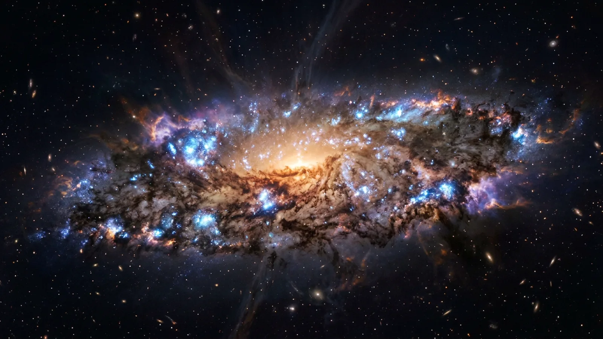
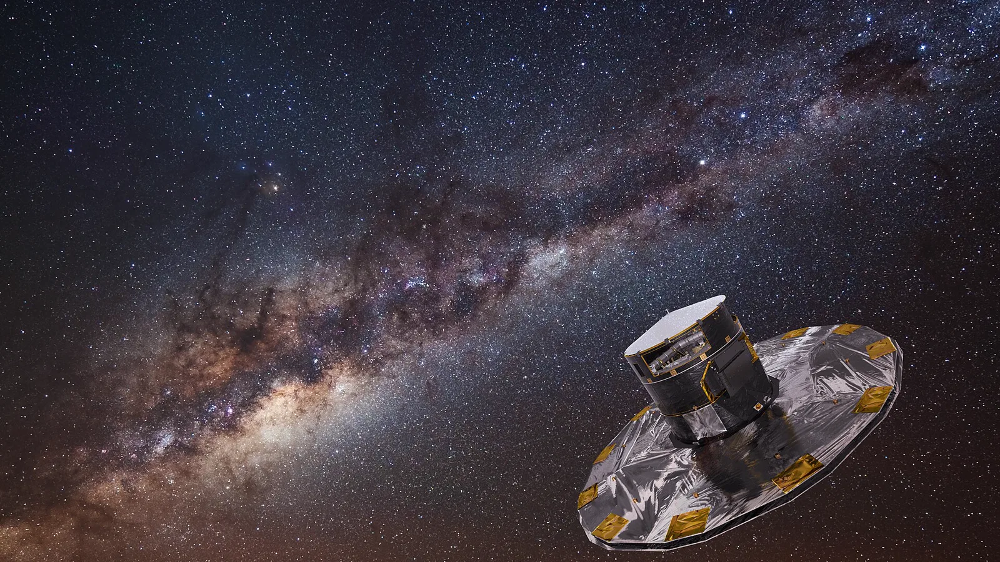
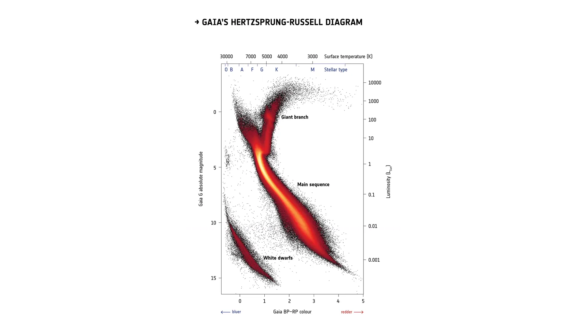
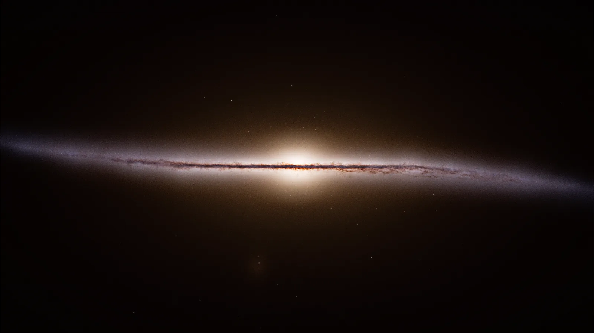
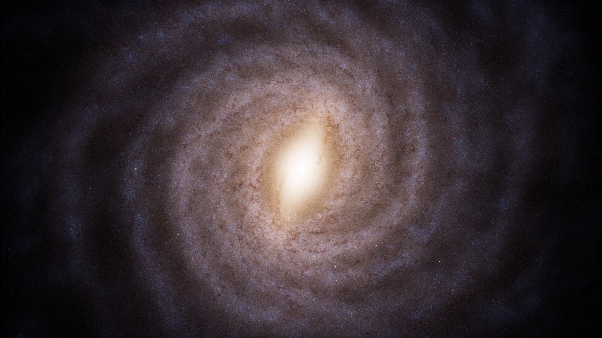
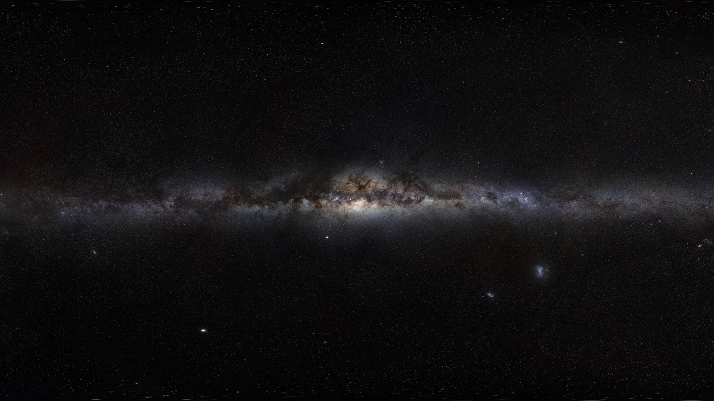

A Via Láctea começa
Em 22 de janeiro começa a se formar o disco mais velho da nossa galáxia. Como é que alguém lê a idade de uma estrela, e janeiro inteiro na régua, cada marca com o seu como se sabe.
No episódio anterior: a MoM-z14, a galáxia mais distante já confirmada, em 8 de janeiro.

Quando a galáxia começou a virar disco

Como se lê a idade de uma estrela
Nas subgigantes, a idade se lê pela temperatura da superfície e pelo brilho. O problema: só uns poucos por cento das estrelas estão nessa fase curta.

O que acharam
Duas fases, divididas nos 8 bilhões de anos: uma antiga, do halo de estrelas em volta do disco e do disco espesso, e uma mais tranquila, do disco.

O disco fino também cedo
Outro grupo, com umas 200 mil estrelas do Gaia: das estrelas pobres em metal em órbita de disco fino, mais da metade tem mais de 13 bilhões de anos.

Janeiro inteiro na régua
A faixa leitosa no céu
Na próxima etapa: de fevereiro a agosto, sete meses com pouca coisa pra marcar por aqui. E a galáxia que come as vizinhas.
